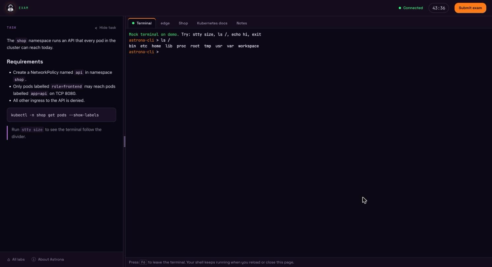
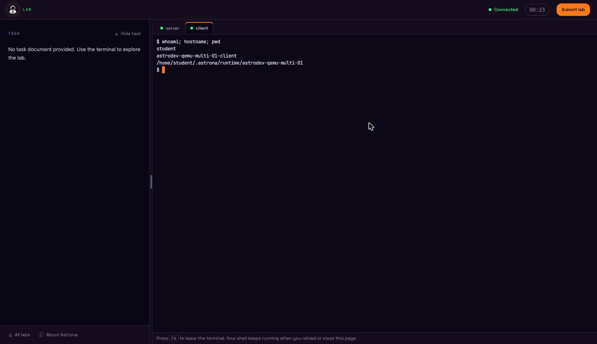
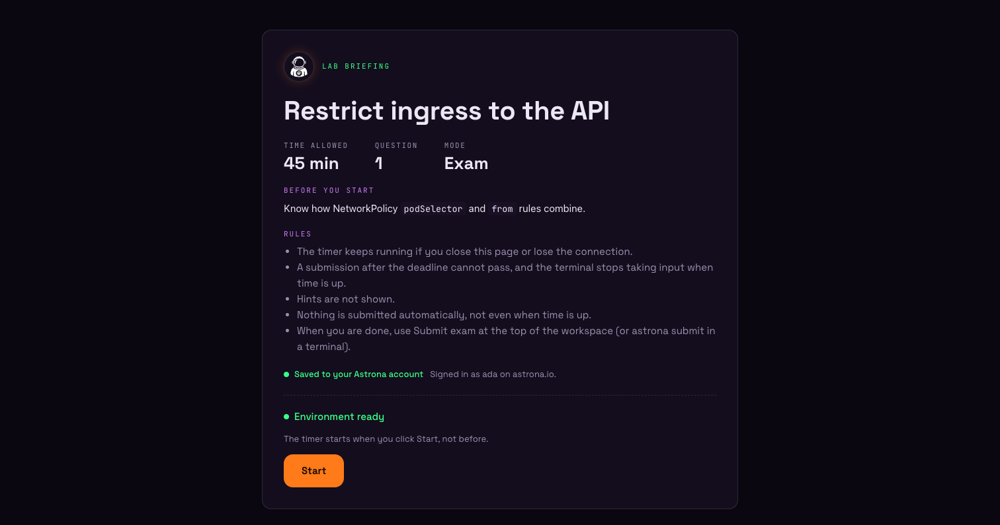
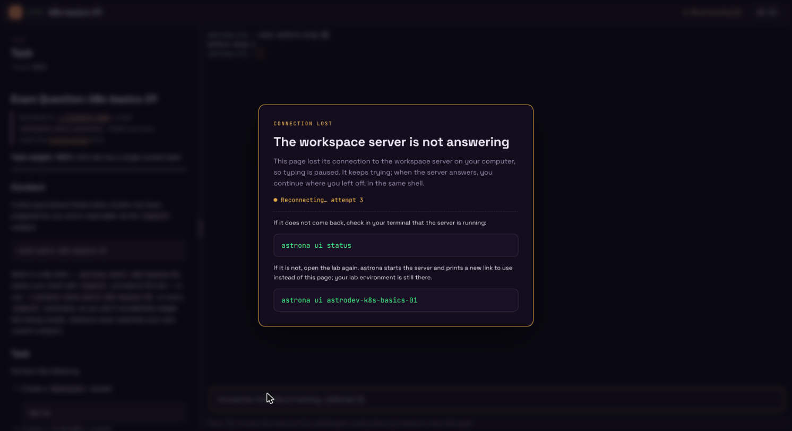
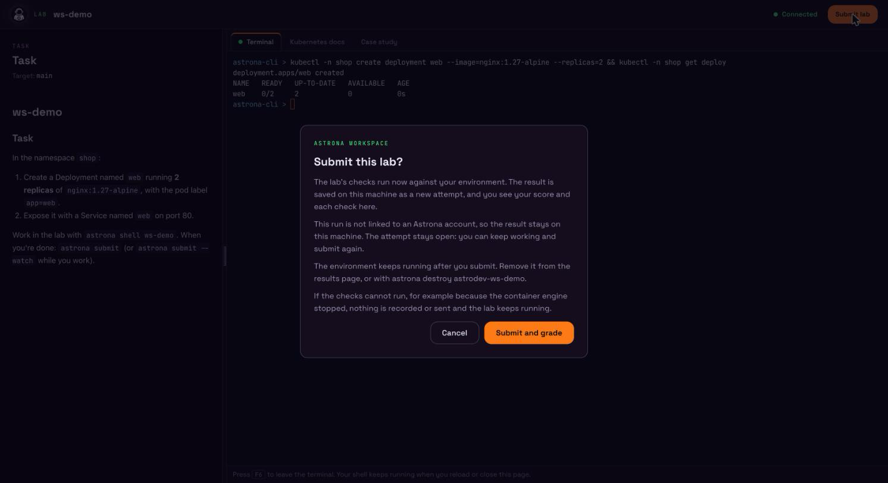
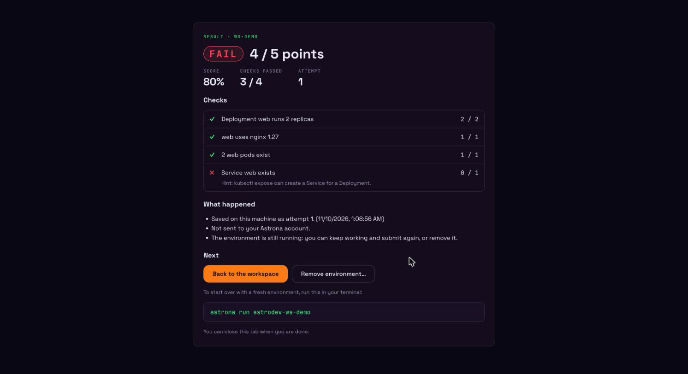

Browser Workspace¶
The browser workspace is a local web page for working on a lab, Kind or QEMU: the task
on one side, a terminal on the lab on the other, in your own browser. astrona
serves the page itself, on 127.0.0.1 only; nothing leaves your machine. It
replaces the earlier terminal UI: astrona ui now opens this page.

Open a lab in the browser¶
An interactive astrona run opens your browser as soon as it starts: it
starts the local workspace server (or reuses a running one), prints a link and
opens it in your default browser. You can follow everything from that tab:
- Terms. When the CLI terms are not accepted yet, or have changed, the tab shows them in a dialog. Accept and continue goes on; Decline and stop stops the command before anything is downloaded or started. Nothing else happens, and no time counts, until you answer.
- Setup. The tab shows each step in a terminal-style window, as the terminal does: what it is doing, ✓ / – / ✗ with how long each step took, and what a long step is waiting on. If setup fails, the tab shows the error and where the log is.
- The lab. Once the lab is ready the tab says so and waits for you.
Nothing counts yet. Begin this session starts the lab and opens the
workspace straight away: the timer, and an exam's clock, start then. If the
start fails, the intro page shows the error and a Start button to try
again. A lab opened another way (
astrona ui, Labs on this computer) still shows its intro page and starts on Start.
While the lab is set up, a card shows whether this run is saved to your
Astrona account. astrona run decides that when it starts the lab:
- Signed in (a catalog lab, signed in): Signed in as
on . The time you spend and your submitted result, pass or fail, are saved to your account. Submitting ends the attempt and removes the lab. For a playground, the card only says that the time you spend in it is saved. - Not signed in (a catalog lab, signed out): the run is not saved to an
account; the time and your result stay on this computer. The card links to
Create a free Astrona account on the site astrona signs in to (opened in
a new tab) and tells you to run
astrona loginand start the lab again. Signing in while this run is open does not link it: a run is linked to an account only whenastrona runstarts. - Local only (
--local-only): nothing from the run is sent. - A lab from your own files or
--githas no account, and shows no card.
The intro page repeats this as one line, with the sign-up link when you are not signed in.
Some questions are still asked in the terminal: whether to start a running lab over, whether to log in, and whether to trust a lab's repository. The tab says so while it waits. If you stop the command (Ctrl+C), the tab says that astrona stopped. A QEMU lab opens the same way, with a terminal on each VM (see QEMU labs).
The browser setting changes this:
always(the default) opens the browser first, as above.neverkeeps the command-line flow.asksets the lab up in the terminal and then asks:
yes and no decide this run; always and never decide it and save the
answer as the setting.
Decide one run with a flag:
astrona run ./labs/my-lab --browser # open it, whatever the setting
astrona run ./labs/my-lab --no-browser # keep the command-line flow
Without a terminal on stdin and stdout, the workspace is not opened unless you
pass --browser. On a machine without a browser (no display) the default and
ask keep the command-line flow; --browser or a saved always prints the
link and opens nothing. --headless never opens the browser.
The link is printed every time the workspace opens, so you can open it yourself:
Continue in your browser: http://127.0.0.1:47300/#code=…&launch=…
Browser workspace: http://127.0.0.1:47300/#code=…&lab=my-lab
The first form is the browser-first run; the second is printed by
astrona ui and by the ask flow.
The #code= part is a single-use launch code that expires after two minutes.
It stays in the fragment, so it never reaches the server log or a referrer, and
the page removes it from the address bar after loading. If the tab you opened
first is closed by the time the lab is ready, astrona opens a new one. A link that was already
used, or is older than two minutes, shows Link expired: run
astrona ui <lab> (or astrona ui status) for a fresh one.
Reopen a running lab¶
astrona ui <lab> opens a running lab again, for a link that expired or a tab
you closed:
astrona ui my-lab
astrona ui # the only running lab; with none or several, every lab on this computer
It starts the workspace server if needed, prints a new link with a fresh code and opens it (or prints it when there is no browser). It never restarts the lab or its timer: an exam whose clock already runs keeps it, even when the lab was started without the browser. It reads the saved local config and cached repository; it does not check GitHub, update the checkout or rerun setup.
A lab named status, stop or serve is opened by its full name, since the
short name is a subcommand: astrona ui astro-status (astrodev-status for
development builds). astrona list shows the full names.
Labs on this computer¶
A lab keeps running in the background after astrona run returns, until you
end it; a playground also ends when its time is up. Each one uses CPU and
memory, so it is easy to leave several running without noticing.
Labs on this computer lists every lab and playground running here, whether or not it was opened in the browser: its title, Kind or QEMU, whether it is running, how long it has been up and, for a playground, when it is deleted. For a lab the workspace knows, Open opens it and End playground or Remove removes it after the same confirmation as in the workspace. Other labs show the command that opens or removes them. Labs that are stopped but not removed are listed on one line below.
To get there:
astrona uiwith no lab name, when no lab or several labs are running;- All labs at the bottom of the workspace's task panel;
- See all labs on this computer after a playground ended or a lab was removed.
The page refreshes every five seconds. When the container engine does not answer, it says so, since Kind labs cannot be listed without it.
QEMU labs¶
A QEMU (VM) lab opens in the browser like a Kind lab: the intro, Start, the
timer, Submit and All labs work the same way. Its terminals are SSH
logins into the VMs, as the lab's student user, starting in the lab's
workspace directory in the VM (~/.astrona/runtime/<lab>), the same login
astrona ssh gives you. There is no kubectl and no host shell.
- A single-VM lab has one Terminal tab on its VM.
- A multi-VM lab has one tab per VM, named after the VM. The first VM in the lab's config is the focus tab.

The VM tabs are fixed: a QEMU lab cannot declare tabs.
When a shell ends (exit), Open a new shell logs in to the same VM again.
The workspace connects with the lab's own key and known-hosts file only; it
never uses your SSH config, agent or keys. If the VM does not answer within 10
seconds, ssh gives up and the tab shows that the shell ended; nothing else is
started in its place.
astrona run still prints the astrona ssh command for each VM, and
astrona status <lab> shows them again, for a terminal outside the browser.
Before you start¶
The first page shows the lab's prerequisites, its time limit and number of questions, and the rules for an exam. Environment ready means the lab finished setting up.

An exam's timer starts when you click Start, not when the lab is ready. From then on it keeps running if you close the page or lose the connection; the top bar counts down to the deadline. A lab in learning mode has no time limit, so after Start the top bar counts up instead and shows how long you have spent on it.
When the run is linked to your Astrona account, Start also starts the lab session's time on astrona.io, with the moment you clicked, so you don't need to open the lab page on the website. Offline, the start is saved on this computer and sent once Astrona can be reached; it never holds up Start. A local-only run sends nothing.
The workspace¶
- Task (left): the question text, rendered from the lab's docs. Its
top-level heading (such as
# Exam Question: <lab>) is left out, since the panel already shows the task; the lab's name is in the browser tab's title. All labs and About Astrona sit at the bottom of the panel. - Terminal (right): a shell on the lab with
kubectlpointed at its cluster (on a QEMU lab, an SSH login into its VM; see QEMU labs). Keyboard focus moves into the terminal after Start and when the page opens. Press F6 to leave the terminal; Shift+F6 works too. The skip links at the top move focus between task and terminal. - Divider: drag it, or focus it and use the arrow keys (Shift for bigger steps, Home / End for the limits). The task panel starts at 25% of the width and can take 15% to 70%; it never gets narrower than 280 pixels. The browser remembers the width you chose.
- Hide task: the button next to Task collapses the task panel to a thin rail, so the terminal gets the whole width. Click Show task on the rail (or use Skip to task) to show the task again; All labs (⌂) and About (ⓘ) stay at the bottom of the rail. The browser remembers this choice too.
When you are done, use Submit in the top bar (see
Submit or end from the browser);
astrona submit in a terminal does the same.
Tabs¶
The right panel shows the lab's tabs. The first, Terminal, is the shell on
the lab's own cluster. A lab can add more with tabs:
a terminal on a linked cluster, a page the lab serves through one of its port
forwards, or documentation. You switch between them with the mouse or with the
arrow keys and Enter; you cannot add or close a tab. Tabs keep running while
another one is shown, so a terminal keeps its shell and its scrollback. When a
shell ends, Open a new shell starts another in the same tab. Without
tabs in the lab, the panel shows only the Terminal tab.
A page or documentation tab shows the page inside the workspace. Back to start returns to the page the lab configured, wherever you navigated, and Open in new window shows it in a separate window. Some documentation sites refuse to be shown inside another page: if a tab stays blank, use Open in new window.
The terminal¶
The shell runs on your machine, held by the workspace server, not by the page:
- Reload or close the page: the shell keeps running. Opening the page again reattaches to it and replays its recent output.
- Another tab: opening the workspace in a second tab moves the terminal there. The first tab shows "This terminal was opened in another tab." with Use it here to take it back.
exit: ends the shell. Open a new shell starts another one; files in the lab are kept.- Connection lost: see below.
Output longer than the screen scrolls back like a local terminal: use the
mouse wheel or trackpad, drag the scrollbar on the right (shown once there is
history), or press Shift+Page Up / Shift+Page Down. The terminal keeps the last
5000 lines. The prompt line always sits above the hint bar at the bottom, and
the shell's size (stty size) follows the visible area when you resize the
window, hide the task or drag the divider.
The terminal draws with WebGL, so programs that use 24-bit ("truecolor") colours show them. Where WebGL is not available, it falls back to a renderer that shows those colours as the terminal's default colours; 16 and 256-colour output looks the same either way.
Connection lost¶
When the page cannot reach the workspace server for more than a second or two (the server stopped or hangs, or the computer slept), a dialog covers the workspace and the page behind it is blurred, so nothing typed goes into a terminal that cannot receive it. It covers every tab, whichever terminal lost its connection:

The page keeps reconnecting and shows the attempt number. The dialog cannot be closed; it goes away by itself once the server answers, and you continue in the same shells, with their output and the task as they were, and the keyboard focus back where it was. Shorter drops do not show it.
If it does not come back, check with astrona ui status that the server is
running. If it is not, astrona ui <lab> starts it again and prints a new
link; the lab environment and its files are still there. A page from the
earlier server then shows Session ended.
With reduced motion or reduced transparency set in the system, the workspace is dimmed rather than blurred.
Submit or end from the browser¶
Browser submissions and removal use the same trust checks as CLI commands. An official catalog lab needs no separate approval when its clean checkout matches the commit published by Astrona. If that verification fails, the page cannot approve code: submit from a terminal to review it. Removal skips unapproved teardown scripts.
The top bar has one button to finish the session. Its label fits the run:
| Run | Button | What it does |
|---|---|---|
| Lab | Submit lab | Grades it, as astrona submit does. |
| Exam | Submit exam | The same; the exam time is recorded at that moment. |
| Playground | End playground | Deletes it now. Nothing is graded. |
The button is disabled, with the reason next to it, when it cannot be used: before Start, while a submission is being graded, or once the lab is no longer running.
It always opens a dialog first that says what is about to happen for this run:
- The checks run and the result, pass or fail, is saved on this machine as a new attempt, with the time you spent.
- Where the result goes. A run linked to your Astrona account is sent to your lab page when astrona is signed in to the same site (or saved to send once Astrona can be reached). A local-only run is never sent. A run without a lab session keeps the result on this machine.
- That submitting is final. Every submit ends the attempt, pass or fail: there
is no fixing the lab and submitting again. Check your work first with
astrona submit --watchin a terminal, which grades without ending anything. - That the environment is removed afterwards. Once the result is sent (or
saved to send), or saved here for a run without a lab session, the cluster
(or the VMs) and its terminals are removed. There is no option to keep them;
teardown.keepClusterdoes not apply to a submit. Only a result Astrona refuses, or one that cannot be sent or saved, leaves the environment running. - If the checks cannot run (for example, the container engine or a VM stopped), nothing is recorded or sent and the lab keeps running.

Cancel has the focus and Esc closes the dialog. While grading runs, the dialog stays open. Keep the page open; if the connection drops, the page asks the server for the result again, and the same submission is never graded twice.
While the checks run, the dialog lists each one: waiting, running with the time so far, or passed or failed with how long it took. A check that retries for minutes shows as running rather than leaving the page looking stuck.
The results page shows pass or fail, the score, the pass mark, the attempt number and every check with its points. A failed check shows its hint only when the lab shows hints. Check commands, expected values and the solution are never shown. Below that it says whether the result was saved and sent and whether the environment was removed.

From there you can:
- go back to the workspace while the environment still runs;
- remove the environment (with a confirmation);
- start over with
astrona run <lab>in a terminal.
When the time is up, a banner says so and offers Submit. Nothing is submitted automatically. In a strict exam a submission after the deadline cannot pass, and the terminal stops taking input at the deadline. Closing or reloading the tab during a session or while grading asks for confirmation first.
The workspace server¶
The workspace server listens on 127.0.0.1 only. Its terminals are the same
isolated containers as astrona shell: they may only write the lab's own
workspace, and never see your home directory, container engine socket or
SSH agent. See terminal workspaces
for file access and the protection boundary. The server stops by itself after
15 minutes without a page, terminal or running lab.
astrona ui status # running?, a fresh link, pages and terminals
astrona ui status -o json
astrona ui stop # stop the server and its terminals; labs keep running
After you update astrona, a browser-first astrona run replaces a server from
the earlier build when nothing uses it, since the older page cannot show setup
progress. If that server still has terminals or pages open, it is left alone,
setup is shown in the terminal only, and the run says so: astrona ui stop
ends it (labs keep running), and the next run starts the new one.
astrona ui status prints a new link with a fresh code each time.
astrona ui stop ends every browser terminal but leaves the labs running; an
open workspace then shows the connection-lost dialog. astrona run or
astrona ui <lab> starts the server again.
Theme¶
The page follows your system's light or dark appearance. The terminal stays dark in both: the tools a lab runs colour their output for a dark terminal.
Security¶
The server only answers on 127.0.0.1, refuses other Host and Origin
headers, and sends a Content Security Policy that allows no inline scripts or
styles. The page talks to it with a session token it gets in exchange for the
single-use launch code. See the workspace API reference
for the details.
Guest login reminder¶
When you are not logged in, each lab run asks before starting the lab:
yes opens the browser sign-in flow and continues startup when it completes.
never saves login-reminder=no. Catalog labs can track account progress after
login; local labs stay local. Restore reminders with
astrona settings set login-reminder yes. Noninteractive catalog runs still
require --without-login when signed out.
For automation, use headless mode:
astrona run <lab> --headless skips the browser question and login reminder and
returns after setup.
History¶
Submission history uses the local results. Completed runs are recorded under
~/.astrona/results/runs (~/.astrona-dev/results/runs for development
builds). These records contain names, catalog identifiers and timestamps,
without credentials or session IDs, and survive destruction and cache cleanup.
astrona progress summarizes graded attempts.